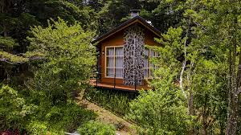

The Perfect Hideaway: Silence Between the Leaves
This isn't just a cabin; it's a promise of tranquility. Imagine waking up here, nestled deep in a lush forest, where the only sound is the whisper of the leaves. I stumbled upon this enchanting retreat during a trip to Patagonia, and it was completely revitalizing. With its warm wooden walls and the stone-clad chimney proudly standing among the trees, the lodge is the perfect sanctuary. The small balcony jutting out into the foliage invites you to sip a hot coffee in the morning while watching the mist dissolve through the branches. The large windows are like natural paintings, framing the intense green of the wilderness. If you're looking for a place to disconnect from the world, breathe clean air, and rediscover the slow rhythm of life, come here. It's the ideal spot to read, write, or simply do absolutely nothing. Leave the stress in the city and come experience the comforting embrace of the woods.
Torna a gli articoli